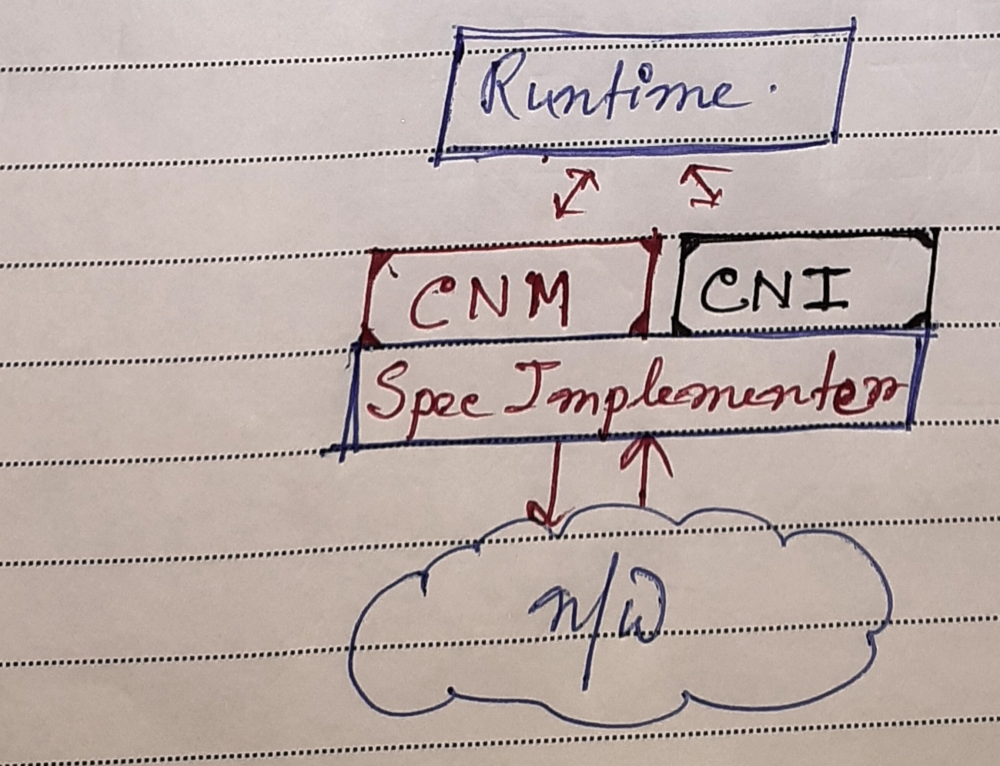
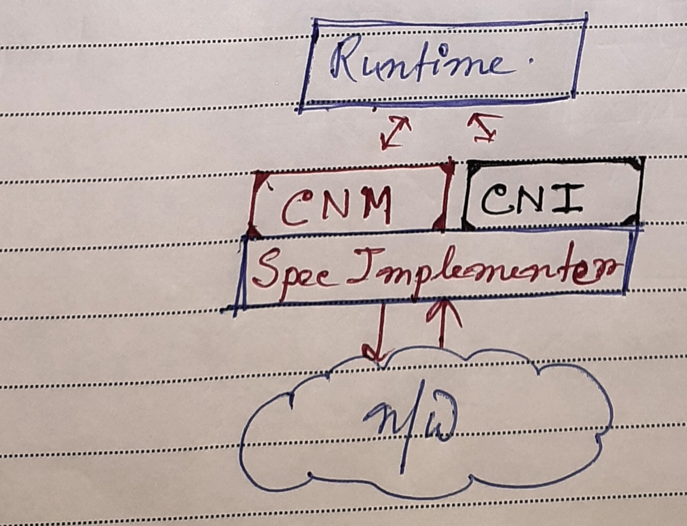
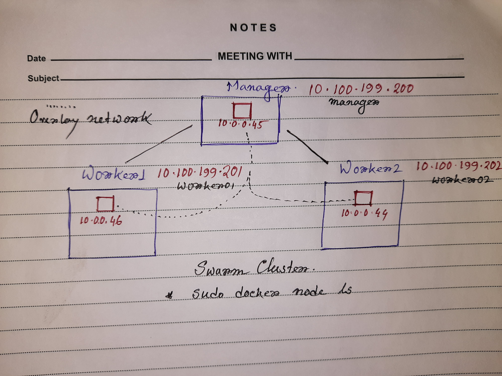
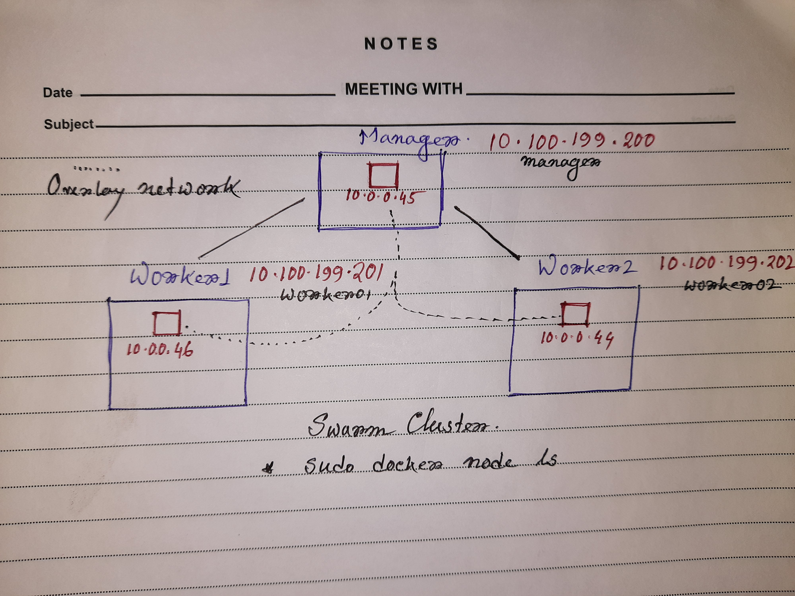

Setting Expectation

- Not a deep-dive kind
- Container networking introduction
- Container network interfaces
- Network drivers
- Overlay and docker swarms
No Network Alert!!

Container networking introduction
Networking aspects
- Need to talk to external world
- Reach container from external world
- Inter container connectivity within the same host
- Inter container connectivity across hosts
- Discover services
- Loadbalance services
- Secure multi-tenant services
Evolution

network interfaces
 Why kubernetes move with CNI standards?
Confession
Guess how then kubernetes supports docker?

Why kubernetes move with CNI standards?
Confession
Guess how then kubernetes supports docker?

Network drivers

Host only
$ docker run --rm --net=host avikjis27/node-server
Bridge driver
$ docker run --rm -p 8080:5000 avikjis27/node-server
None driver
$ docker run --rm --net=none avikjis27/node-server
Docker Swarm
 

$ sudo docker service create --name node-server
--replicas 3 --publish published=8080,target=5000
avikjis27/node-server